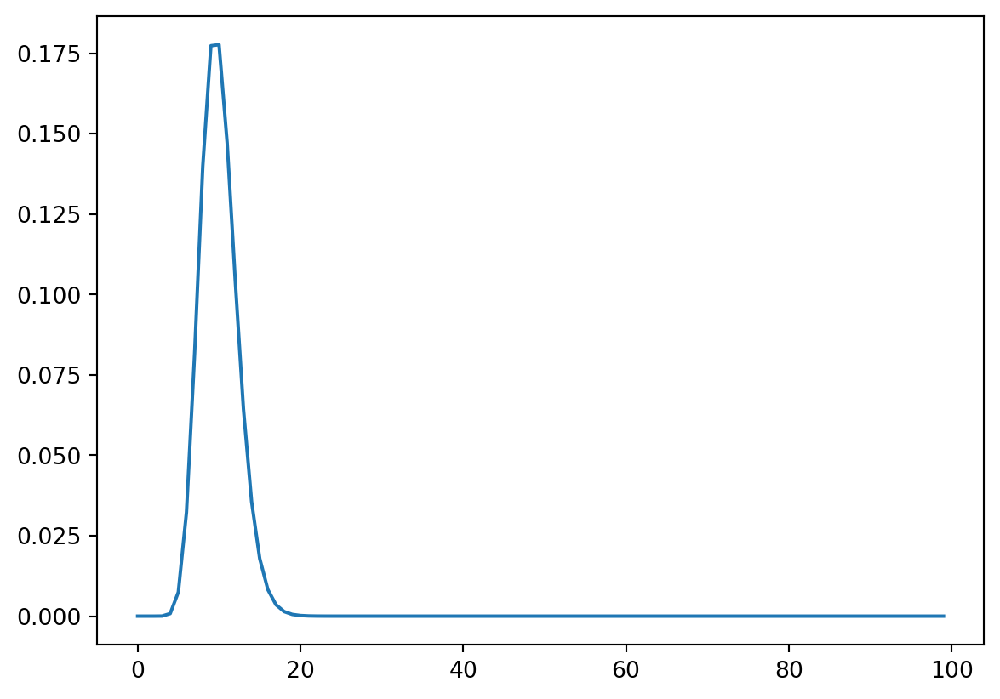
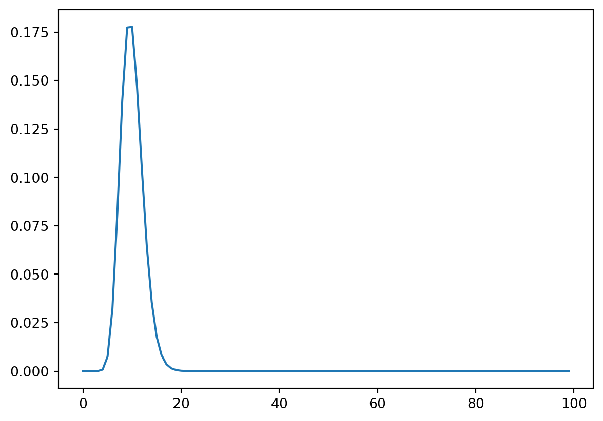

from scipy.stats import gamma
import matplotlib.pyplot as plt
import numpy as np
rv = gamma(a=20, scale=1/2)
plt.plot(rv.pdf(np.arange(100)))
\[ \require{physics} \require{braket} \]
\[ \newcommand{\dl}[1]{{\hspace{#1mu}\mathrm d}} \newcommand{\me}{{\mathrm e}} \]
\[ \newcommand{\Exp}{\operatorname{E}} \newcommand{\Var}{\operatorname{Var}} \newcommand{\Mode}{\operatorname{mode}} \]
\[ \newcommand{\pdfbinom}{{\tt binom}} \newcommand{\pdfbeta}{{\tt beta}} \newcommand{\pdfpois}{{\tt poisson}} \newcommand{\pdfgamma}{{\tt gamma}} \newcommand{\pdfnormal}{{\tt norm}} \newcommand{\pdfexp}{{\tt expon}} \]
\[ \newcommand{\distbinom}{\operatorname{B}} \newcommand{\distbeta}{\operatorname{Beta}} \newcommand{\distgamma}{\operatorname{Gamma}} \newcommand{\distexp}{\operatorname{Exp}} \newcommand{\distpois}{\operatorname{Poisson}} \newcommand{\distnormal}{\operatorname{\mathcal N}} \]
Definition 6.1 Let \(\mathcal Y=\set{0,1,2,\ldots}\). The uncertain quantity \(Y\in\mathcal Y\) has a (denoted by \(Y\sim\distgamma(a,b)\) or \(Y\sim\Gamma(a,b)\)) if \[ \Pr\qty(Y=\theta\mid a,b)=\pdfgamma(\theta,a, b)=\dfrac{b^a}{\Gamma(a)}\theta^{a-1}\me^{-b\theta},\quad \text{for }\theta,a,b>0. \]
Here
from scipy.stats import gamma
import matplotlib.pyplot as plt
import numpy as np
rv = gamma(a=20, scale=1/2)
plt.plot(rv.pdf(np.arange(100)))
rv.interval(.95)(6.108259792701973, 14.835426785792794)Theorem 6.1 If \(Y\sim \distgamma(a, b)\), then
\[ \begin{split} \Exp\qty[Y\mid a,b]&= \int_{0}^{\infty}\theta\frac{b^a}{\Gamma(a)}\theta^{a-1}\me^{-b\theta}\dl3\theta\\ &=\int_{0}^{\infty}\frac{b^a}{\Gamma(a)}\theta^{(a+1)-1}\me^{-b\theta}\dl3\theta\\ &=\int_{0}^{\infty}\frac{\Gamma(a+1)}{b\Gamma(a)}\frac{b^{a+1}}{\Gamma(a+1)}\theta^{(a+1)-1}\me^{-b\theta}\dl3\theta\\ &=\frac{\Gamma(a+1)}{b\Gamma(a)}\int_{0}^{\infty}\pdfgamma(\theta,a+1,b)\dl3\theta\\ &=\frac{a}{b},\\ \Exp\qty[Y^2\mid a,b]&= \int_{0}^{\infty}\theta^2\frac{b^a}{\Gamma(a)}\theta^{a-1}\me^{-b\theta}\dl3\theta\\ &=\int_{0}^{\infty}\frac{b^a}{\Gamma(a)}\theta^{(a+2)-1}\me^{-b\theta}\dl3\theta\\ &=\int_{0}^{\infty}\frac{\Gamma(a+2)}{b^2\Gamma(a)}\frac{b^{a+2}}{\Gamma(a+2)}\theta^{(a+2)-1}\me^{-b\theta}\dl3\theta\\ &=\frac{\Gamma(a+2)}{b^2\Gamma(a)}\int_{0}^{\infty}\pdfgamma(\theta,a+2,b)\dl3\theta\\ &=\frac{a(a+1)}{b^2},\\ \Var\qty[Y\mid a, b]&=\Exp\qty[Y^2\mid a, b]-\qty(\Exp\qty[Y\mid a, b])^2\\ &=\frac{a(a+1)}{b^2}-\frac{a^2}{b^2}=\frac{a}{b^2}. \end{split} \]